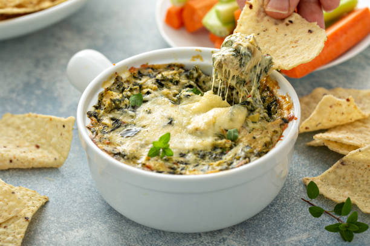

Spinach Artichoke Dip

Description
It’s easy, just mix, bake, and serve!
You can prep it up to two days ahead.
It takes about 10 minutes to put together.
Ingredients
- Spinach: I use frozen spinach since it’s easy. Thaw in the fridge overnight or placing it in a fine mesh strainer and run it under hot water. Squeeze it very dry so the dip doesn’t get watery.
- Artichokes: Choose marinated artichoke hearts that come in a jar of seasoned oil—they have more flavor. If using canned artichoke hearts, they’re usually packed in water without seasonings, so add ½ teaspoon of Italian seasoning to the dip.
- Cream cheese: A block of cream cheese is mixed with sour cream forul the base. Sour cream makes the dip softer for scooping and keeps it from being too rich. Replace the sour cream with Greek yogurt for fewer calories and a tangy flavor.
- Cheese: Mozzarella, parmesan, and Gruyere is our favorite combination in this recipe.
Steps
- Mix the cream cheese, sour cream, and mayonnaise
- Fold in the cheese, spinach, and artichokes.
- Bake until bubbly!